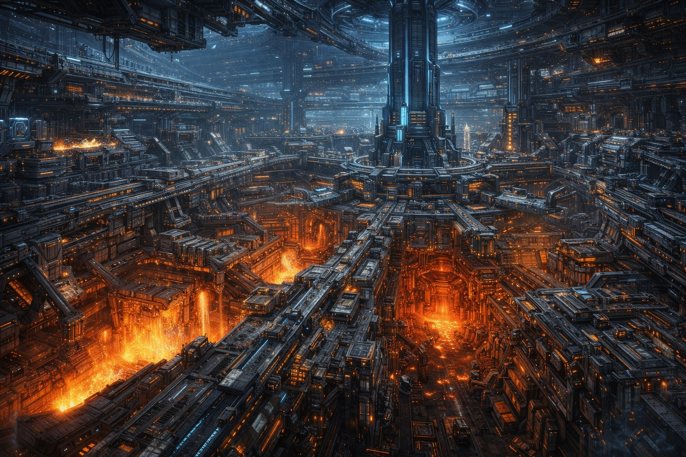

至构联邦

阵营总览
总览至构联邦是一整条以解析、验证、制造、迭代与量产将宇宙法则转化为可控技术体系的文明道路。
至构联邦相信宇宙一切现象——元素、灵魂、法则波动、空间异常、夹层遗物——都可被观测、拆解、建模、重组与工程化。所谓"奇迹"是尚未被理解的高阶现象，"神迹"是尚未被复制的系统级技术。
文明的强大在于把力量转化为稳定结构、可复制流程、可扩张体系与可量产成果。
起源与命名
总览"至构"意味着构筑本身就是文明最接近神明的行为——主动重塑条件，重构世界的外壳、秩序、交通、战争、生产乃至文明延续本身的框架。
"联邦"则说明他们并非单一国度，而是由多个世界、殖民环带、工业城邦、技术共同体与工程军政体联合而成的超大型文明结构。
寰构天环
主城寰构天环是至构联邦的主城，整个科学阵营最核心的首都巨构——一道环绕天体运行的巨大星环。无数工业模块、舰港、居住带、能源炉与运算中枢铸造成一整圈环形世界，横跨真空，昼夜不停运转。
寰构天环集主城、工业母体、研究中枢、战争堡垒、舰队母港与跨世界资源调度核心于一体。工业、行政、战争、运输与生存本身被直接铸成城市。
视觉上，寰构天环呈现为：一道庞大到几乎看不见全貌的星环横贯天穹，外壁布满工业纹路、轨道设施与灯火洪流，舰船与运输列车在不同环层间高速穿行。外部船坞与巨型机械臂在真空中持续作业，环内分布着透明穹顶居住区与层叠城市模块，核心区持续闪烁冷白与幽蓝的能量脉冲。

城市结构
寰构天环一、联邦主枢
星环绝对中控核心，负责最高议会、行政与军工调度、交通管理、远征权限、战略兵器控制与资源生产总协调。
二、工造环带
寰构天环最具代表性的区域。无数工厂、装配线、精炼炉与测试平台沿环带展开，持续生产武器、装甲、外骨骼、机械义体、战争机械与舰体构件——一个不停产出未来的世界工厂。
三、舰港与船坞区
分布巨型外部船坞与舰港带，承担轨道舰船建造、远征平台维护、工程母舰装配、武装舰队停泊，以及夹层开拓部队出发与回收。机械臂、发射井、停泊架与浮空舰体共同构成了寰构天环最有压迫感的天际线之一。
四、居住与商业环带
环带内层包含公民居住区、技术学院、工程人员社区、商贸节点、生态维生区、训练设施和公共运输网络。透明穹顶、立体街区、悬浮轨道列车与冷白灯火，共同构成了巨型星环内部的生活景观。
五、星炉心核
整座寰构天环最重要的能源命脉。一套将高能资源、宇宙现象甚至部分异常法则现象转化为稳定能源输出的超级系统。整个星环的工业运转、武器系统、运输网络、生态维生与战略防御，都依赖于星炉心核的持续跳动。
六、外环防御带
外环遍布轨道炮阵列、护盾投射塔、无人战机巢港、异常压制装置、防空与拦截平台，以及对夹层裂隙的封锁炮门。一旦进入战争状态，整座寰构天环就不再只是首都，而会变成一枚横在宇宙中的巨型钢铁武器。
力量体系
体系至构联邦的力量来自把规则变成"结构"。通过测量、建模、校准、重复实验与工程封装，将规则现象转化为人人可用、机器可跑、军团可配发的工业体系。
魔法师靠自身与火之表征共鸣来施展火焰术，至构联邦则研究：燃烧现象如何稳定触发、如何高能输出、如何压缩进武器模组、如何让一万台设备都复制同样的结果。魔法传送阵是借空间表征律完成跳跃，科学阵营则制造"相位轨道门"，通过庞大能量和稳定参数，强行把空间现象工程化。
所以科学并非"不碰规则"，而是接触可被测量和固化的规则底层。手段是参数、结构、能量、材料、算法与装置，核心是拆解与复制。力量表现形式包括：枪械、重火器、外骨骼、机甲、无人机、护盾系统、战术平台、轨道打击、工程兵器、环境构筑装置与高能矿物驱动设备。

战斗风格
至构联邦是最稳定、最具阵地推进感的路线。擅长中远距火力压制、战术部署、工程建造、机械单位召唤、护盾支援、重装推进、团队火力协同与载具平台战斗。核心优势在于把战斗变成高度精密的系统工程。
升级路线与资源
体系成长循环：进入夹层探索 → 回收遗迹科技与结构样本 → 采集珍贵矿物与高能资源 → 解锁工程蓝图与制造分支 → 制作武器、护甲、载具与战术平台 → 优化装备链 → 前往更深层区域获取更高阶工业核心。最核心的成长资源是可转化为工业成果的知识。
核心资源
蓝图与技术档案——包括远古设计图、异常结构模型、能源调度协议、兵器框架、工程模板等，是解锁制造体系的核心。
珍贵矿物与材料——包括高能晶矿、超密度合金、异界导体、相位纤维、热核燃材等，用于制造装备、战舰、护甲与核心系统。
工业组件与核心模组——包括引擎核心、运算模块、火控系统、护盾发生器、动力骨架、无人机脑核等，决定装备系统的上限与稳定性。
组织结构
体系至构议会——最高层，负责联邦总路线、工业统筹、远征权限与重大战略决策。
首构执政官——联邦最高领袖。
工造部门——负责制造体系、武装研发、资源精炼与工业链运转。
演算部门——负责建模、数据推演、异常测绘与战略调度。
远征部门——负责夹层勘探、资源回收、遗迹拆解与对外开拓。
防务部门——负责舰队、环防、重装军团与战争平台调度。
公民与殖民部门——负责居住区、补给、生态维生、对外殖民与边疆开发。
阵营气质
气质与立场至构联邦是将理性、制造与秩序发展到极致的宇宙级构筑文明。通常显得务实、高效、严谨，重视结果与验证。尊重奇迹，但只尊重能被转化为文明能力的奇迹。
对外立场
气质与立场对灰烬秘塔（魔法侧）
"你们在与规则说话，我们在把规则做成机器。说话只能一次触动一个人，而机器能让一万人同时运转。"在他们看来，魔法与表征律的共鸣过于依赖天赋、认知与个人适配，而文明真正需要的是可以被稳定提纯、脱离个人天赋后仍然成立的力量体系。
对灵肉圣所（生物侧）
"你们把变量植入自身，把不确定性奉为进化；那不是稳定的未来，而是难以控制的风险。"在他们看来，血肉的确拥有成长性，但也拥有不可预测性。而一个不可预测的体系，不配成为文明的根基。
夹层观
气质与立场对至构联邦而言，夹层是资源矿脉、遗迹工场、异常实验场与未来技术的残骸堆积地。他们在夹层中看到可提炼的材料、可逆向的装置、可建模的异常与可纳入工业体系的未知现象。